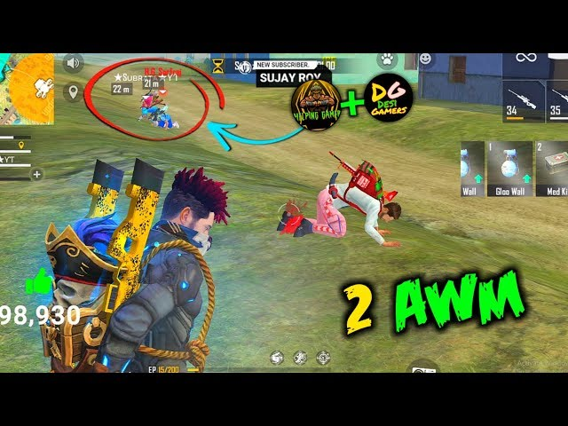

Quick navigation
1Smart landing
Pick a consistent, medium-tier drop close to vehicles and cover. Avoid early 50–50 fights unless you have height or third-party potential.
Tip: Glide to land first. If two squads contest, divert 300–400m to a safe compound instead of forcing a bad fight.
2Loot economy
Hit a fixed loot route. Aim for AR + short-range (SMG/shotgun), 2× or 4×, Level 2+ vest/helmet, 3 medkits, 6+ glue walls, and 150–200 AR ammo.
- Prefer MP40/UMP or M1887 in close quarters.
- Carry one throwable slot for gloo-wall breaks or zone pressure.
Upgrade: Use vending and airdrops to convert extra ammo into utilities. Utilities win ranked.
3Positioning power
High ground, hard cover, and off-angles beat raw aim. Fight from edges, not center, so fewer teams can shoot you.
- Peek from third-person. Only wide-swing when you have teammate crossfire.
- Break opponent glue walls from diagonal lines, then re-peek.
4Clean rotations
Rotate early along the safe edge with cover hops. Mark two backup paths in case of gatekeepers.
- Use vehicles only to reposition. Park behind hard cover, not in open.
- Third-party fights: wait 3–5 seconds after heavy gunfire, then push from the quiet angle.
5End-game discipline
In the last two zones, value placement points. Avoid ego-challenges. Hold cover, clear your back, then slice one side of the circle.
- Save at least 2 glue walls for final circle.
- Play man-advantage. If solo, play snake/third-party only.
Bonus: Sensitivity & HUD
Settings differ per device. Start here and adjust ±5 until recoil feels stable.
- General: 90–95
- Red Dot: 80–85 • 2×: 70–75 • 4×: 60–65
- AWM: 40–50 • Free Look: 60
Customize your HUD so fire, scope, and glue wall are reachable with separate fingers. Reduce accidental taps.
Ranked match checklist
- Pick safe drop with 2+ buildings and a vehicle chance.
- Leave loot spot with armor 2+, 3 medkits, 6 glue walls, 2 guns.
- Hold edge, avoid center. Fight only with cover and numbers.
- Rotate early on the quiet side. Third-party, don’t first-party.
- Save utility for end-game. Play placement, then clean up.